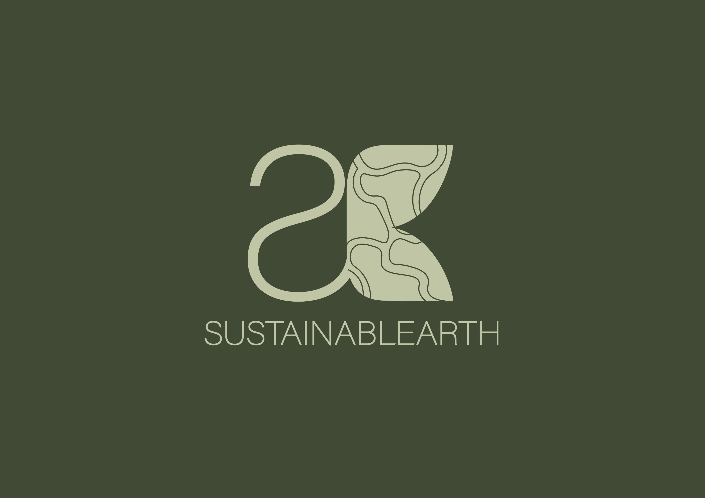
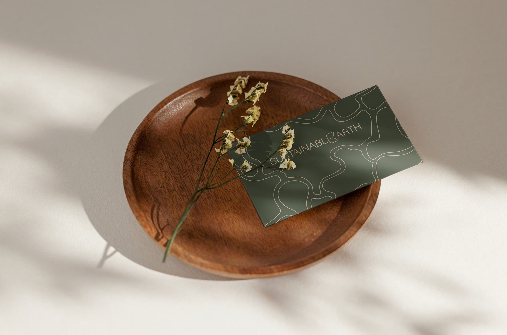
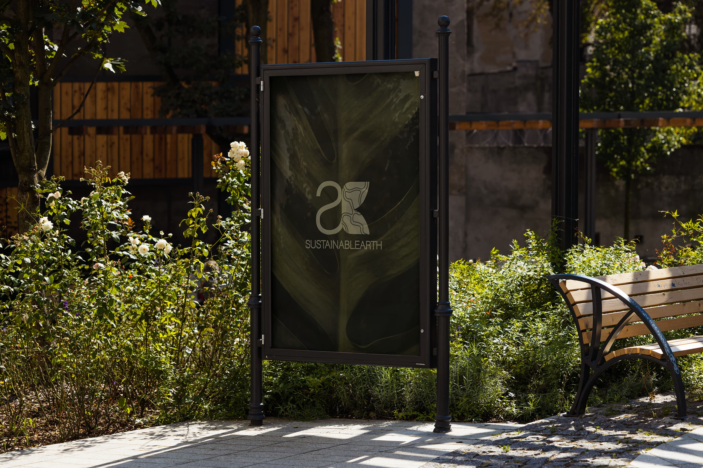
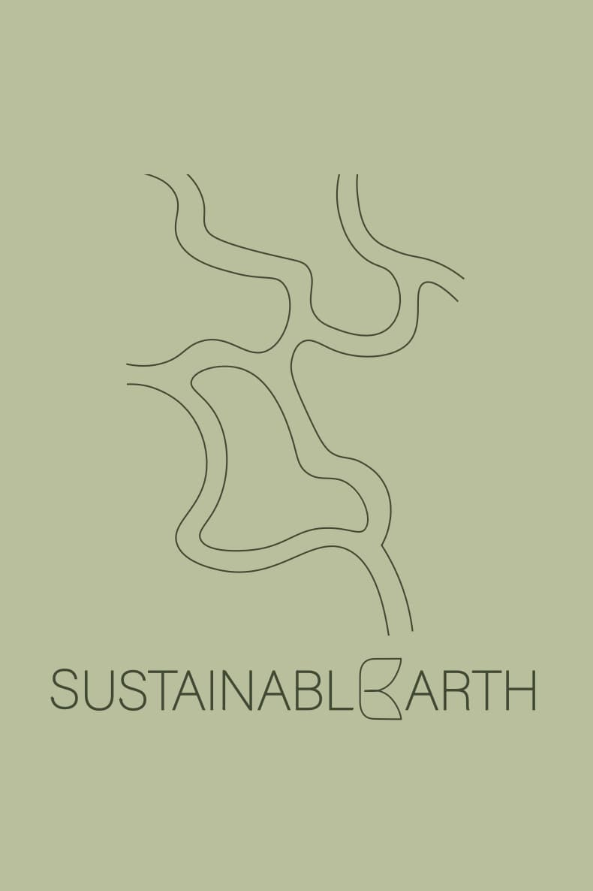
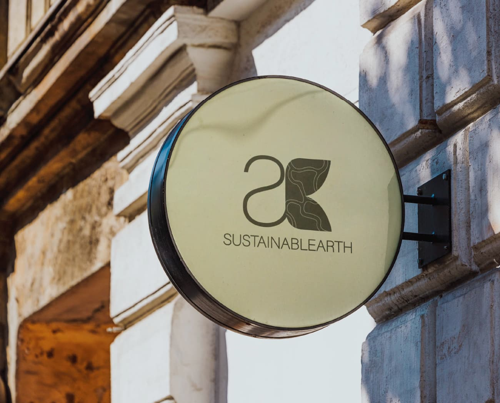
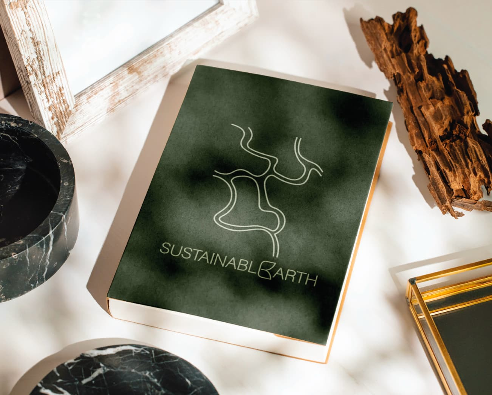

Adobe Illustrator
Adobe InDesign

The Project (2023)
In partnership with the Aga Khan Foundation, our team undertook a project to strengthen Sustainablearth's brand identity to better support their mission of advising individuals and businesses on sustainable practices. Based in Lisbon, Sustainablearth is an environmental consultancy committed to fostering sustainable growth and meaningful change within African and Portuguese communities. Our goal in this rebranding project was to enhance Sustainablearth's market presence and empower them to reach more clients, enabling a larger audience to benefit from their expertise in sustainable practices. Through strategic design and messaging, we aimed to amplify their voice in the sustainability sector and encourage a positive ripple effect on local economies and ecosystems.
To convey Sustainablearth's commitment to sustainability, we drew inspiration from Africa's diverse natural elements, incorporating visuals of leaves, rivers, and organic forms into their logo and overall brand identity. These design elements symbolize resilience, interconnectedness, and a respect for nature, aligning with Sustainablearth's mission to guide clients toward a harmonious relationship with the environment. The rebranding effort included a brand book detailing visual guidelines and messaging principles, ensuring that Sustainablearth's brand remains consistent and impactful across all platforms. This refined identity not only boosts their visibility in the market but positions them as trusted advisors, inspiring other ventures to embrace sustainable practices.




